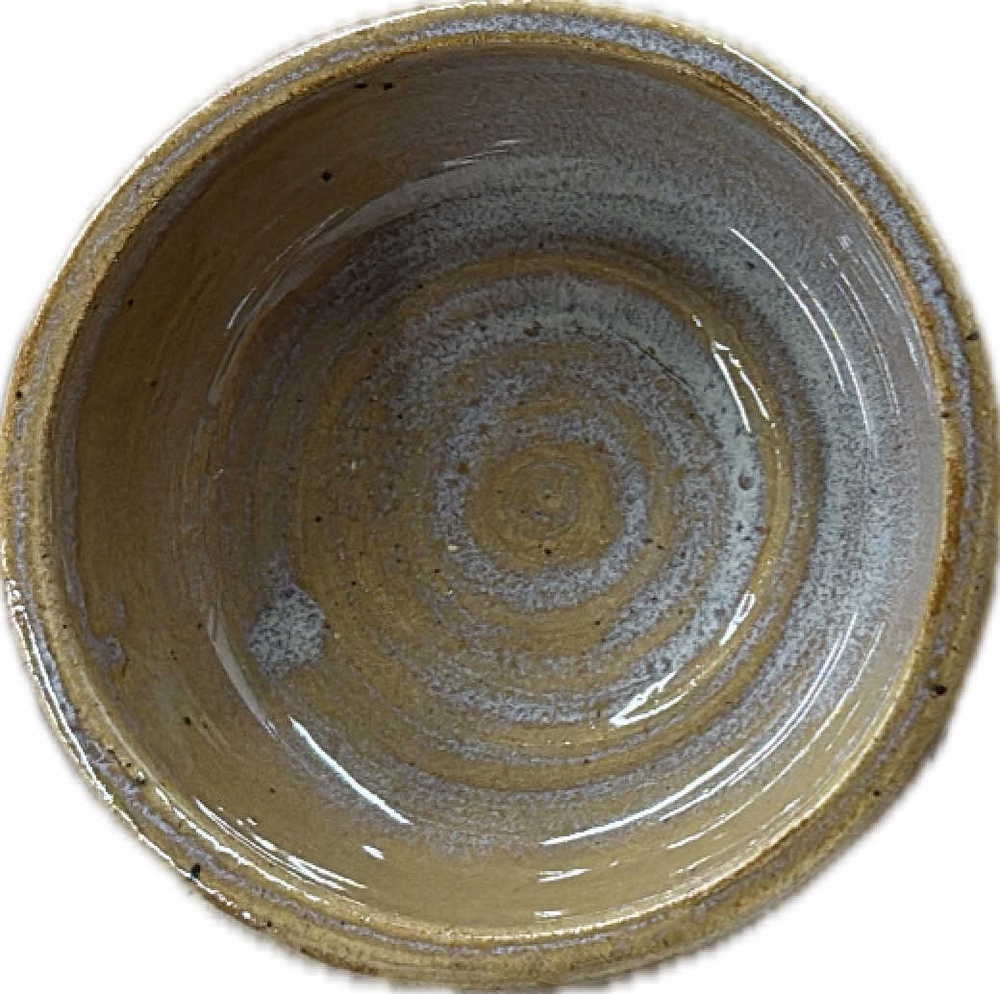
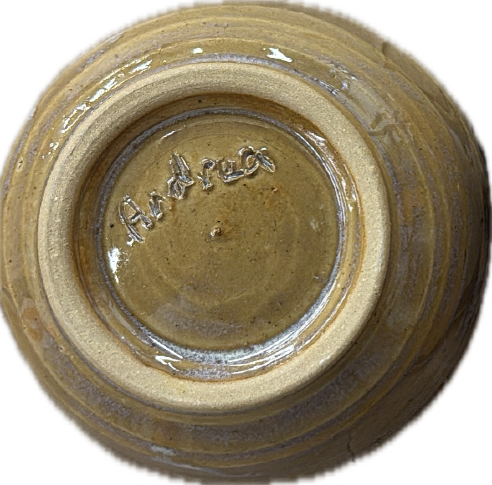
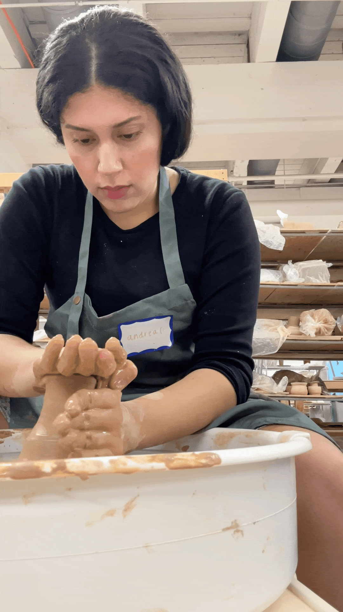
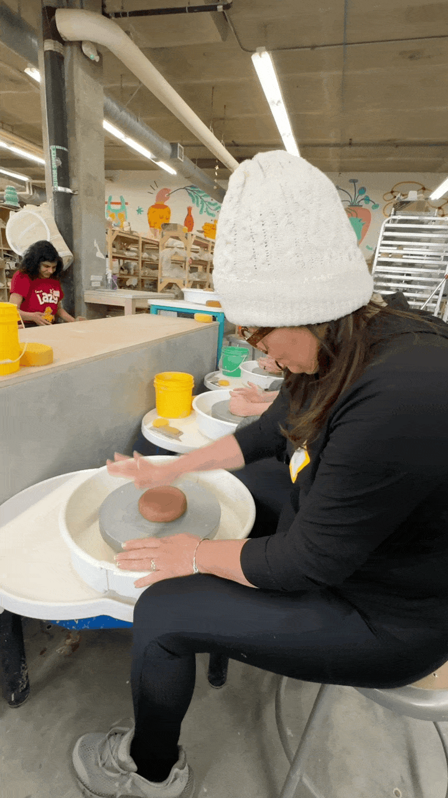
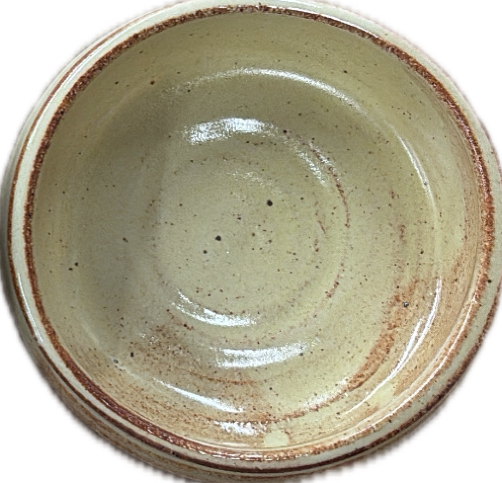
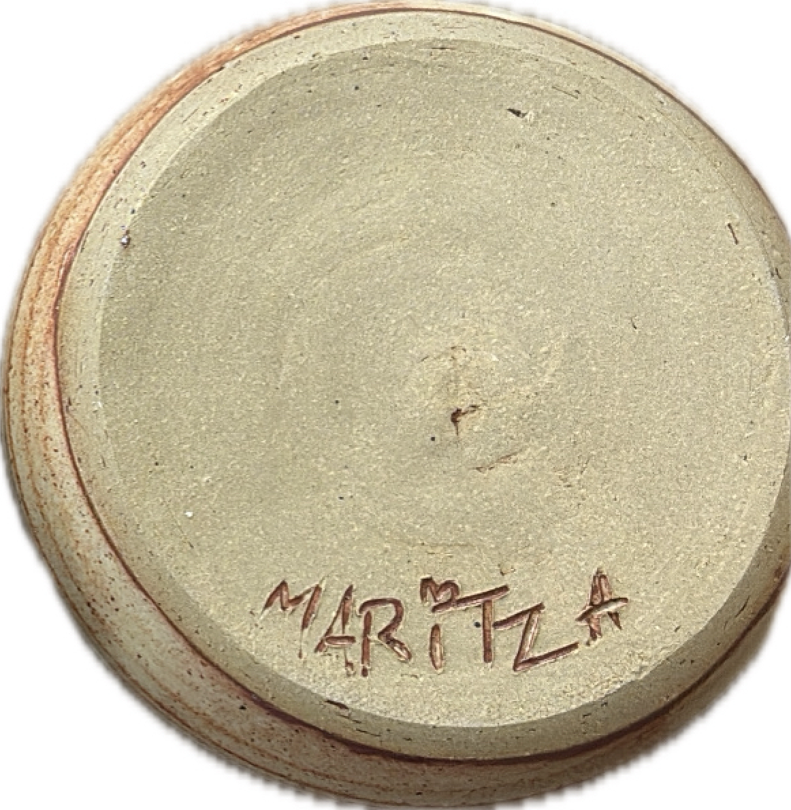

2025 · designed in figma and built in code in seattle . ݁₊ ⊹ .
conversation is my favorite medium
My love for pottery can go back as early as my elementary school days. I did pottery all throughout high school and eventually picked it back up as a hobby in my early adulthood when I moved to Seattle. Pottery is a practice that takes a lot of patience. There are so many steps and stages involved. Pottery reminds me that it's essential to slow down and speed up at just the right moments to create something worthwhile.
My mom always told me she's wanted to try pottery since she's never done it before. For mother's day in 2025, I took her to her first wheel throwing class, below is what we made together. I now use these vessels whenever I make breakfast or eat fruit. Things like this make an ordinary moment like breakfast more special.






2025 · designed in figma and built in code in seattle . ݁₊ ⊹ .
conversation is my favorite medium